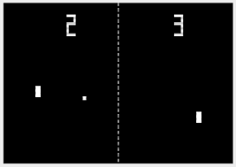
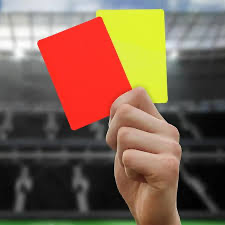

Hello, My name is Owen Dunk. I am a first year student at York University. I am taking Financial Business and Economics. I am enjoying my time here and am having fun in all of my classes. I feel that this course will allow me to better help my skill when it comes to coding and hosting websites. This course allowed me to have a better understanding of how businesses security works and protects individuals and companies.
Every since I was a kid I have been into soccer. I play for a team during the summer with my friends. I enjoy soccer as it allows me to keep myself active and in shape. Soccer allows me to keep myself busy and lets me take a break from studying when I need it.

In high school, I fully coded pong in python from scratch for my final project. Throughout the course we were taught several tools such as pygame to be able to create moving objects and give them collision. We were taught several things such as global variable and classes. We were able to create several different games such as pong and space invaders. We added our own custom sprites and sound effects.

In the summer I also referee soccer games as a part time job. It allows me tyo keep myself active and stay involved with the sport that I like. I am able to make some money while still partaking in the sport. It gives me the chance to grow my life skills by taking charge and managing two full teams of player and coaches.